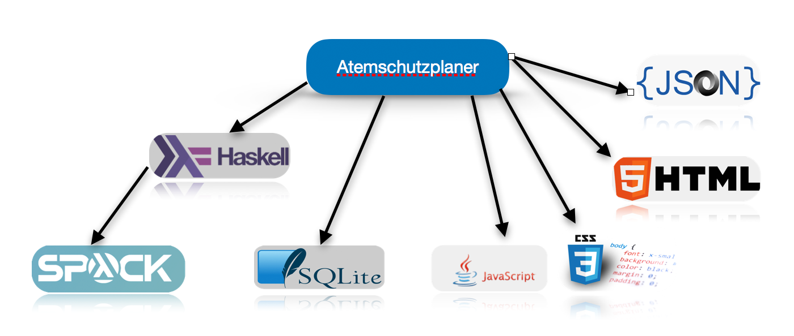
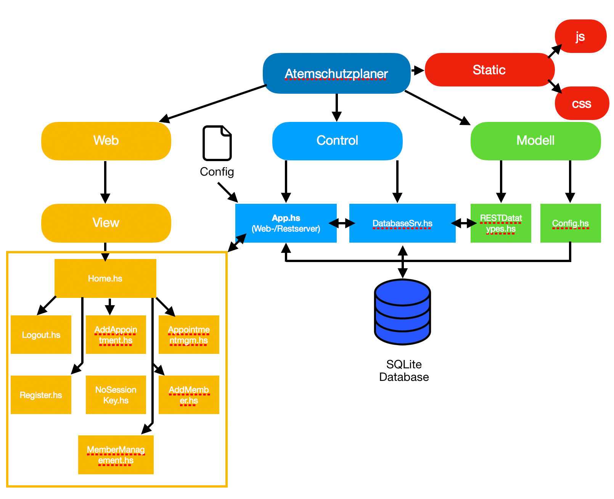

Die Anwendung wurde fast ausschließlich in Haskell implementiert und wird durch die
Atemschutzterminplaner.cable-Datei
konfiguriert. Diese legt fest, welche Module zur Applikation gehören, sowie, welche externen Pakete zur Anwendung gelinkt werden müssen.
Der Kern der Anwendung ist ein Web-/RESTServer welcher mittels des
Spock Frameworks implementiert wurde.
Für das Ablegen von Mitglieder, Terminen, Benutzern, sowie Sessionkeys für Login und Logout wird eine SQLite Datenbank eingesetzt.
Die Kommunikation wird durch Funktionen aus dem Paket
Database.Persist.SQlite implementiert.
Für das Design wird css verwendet. Die verschiedenen Designelemente sind dabei an Elemente von
Google Material Design Lite angelehnt.
Für diverse Animationen und dem Auslesen von Benutzereingaben wird Javascript eingesetzt.

Die Applikation orientiert sich am Entwurfsmuster
MVC (Model View Controller). Im Ordner Control befinden sich alle zur Steuerung benötigten Module.
Das Kernstück bildet hierbei das Modul App, dieses enthält den Web- und RESTServer welcher mittels des Spock Frameworks
realisiert wurde. Zudem wird hier die Konfigurationsdatei ausgelesen und somit die Einstellungen des Webservers festgelegt,
die Dabei möglichen Parameter werden im Modul Config spezifiziert.
Das Modul stellt einen Webserver bereit und wechselt anhand der eingehenden HTTP-Requests die Anzeigen, welche im Ordner
Web/Views untergebracht sind. Alle View-Module greifen Dabei auf das "Hauptmodul" Home zu, dieses gibt den grundsätzlichen
Aufbau aller View-Module vor.
Zudem wird ein RESTServer zur Verfügung gestellt, dieser nimmt Requests an und leitet diese an das Modul DatabaseSrv weiter.
In diesem Modul findet die gesamte Kommunikation mit der Sqlite Datenbank, sowie das Packen und Entpacken von JSON Paketen statt.
Diese werden dann wieder an den Webserver gegeben, dieser leitet diese als Response an den Sender zurück.
Wie verschiedene JSON Pakete aufgebaut sind entnimmt der Webserver dabei dem Modul RESTDatatypes, dieses ist von der Geschäftslogik
entkoppelt und kümmert sich nur um die Darstellung der Daten. Deshalb ist dieses Modul im Ordner Model abgelegt.
Im Ordner static sind die für die Anwendung benötigten css und Javascript Dateien abgelegt. Die css-Dateien legen
das Design der Anwendung fest. Javascript wird für die Animationen der Eingabefelder benötigt, sowie zum Auslesen von Eingabefeldern,
dem Packen dieser Daten in JSON-Pakete und übermitteln an den Spock-RESTServer.

Um eine hohe Softwarequalität sicherzustellen werden automatisierte Tests durchgeführt. Hierbei wird z.B.
die Datenbankanbindung getestet, indem Einträge angelegt und wieder entfernt, bzw. modifiziert werden.
Außerdem werden JSON-Testpakete an den RESTServer gesandt entpackt und deren Korrektheit geprüft.
Zusätzlich werden sämtliche Konvertierungsfunktionen getestet, z.B. das Umwandeln von Datum und Uhrzeit in Strings.
Zum Schluss werden den Algorithmen getestet, welche Termin- und Mitgliederverwaltung miteinander verbindet.
Hierfür wird ein
Travis-CI Server eingesetzt, welcher bei jeder Änderung, sowie
einmal Täglich das Programm compilliert und die festgelegten Tests durchführt.
Aktueller Status (Branch Master)